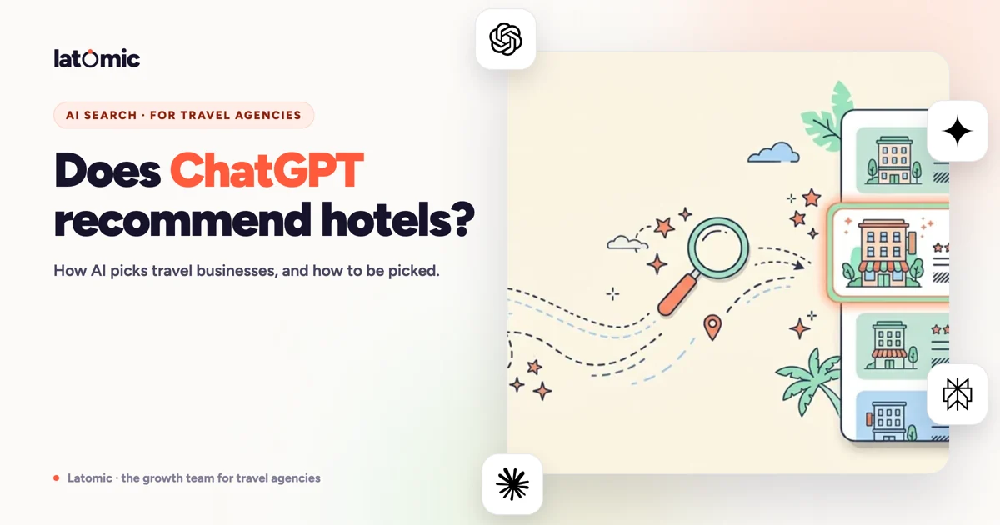

Does ChatGPT recommend hotels and travel businesses?
Yes. Ask ChatGPT where to stay in Lisbon or who runs small-group treks in Nepal and it answers with a short list of named businesses. But it names a handful, not everyone, and most hotels and agencies never make that list. This guide explains how it chooses, where it reads its travel answers, why so many firms stay invisible, and what gets you named.

ChatGPT does recommend hotels, travel agencies and tour operators, and it does so by name. It reads your pages, your reviews and the directories that list you, then returns a short shortlist, usually three to five options, to a traveler's question. The same machinery picks a hotel and an agency: readable pages, consistent listings and real reviews. Most travel businesses are absent from that shortlist not because ChatGPT dislikes them but because it can't read them, can't verify them, or can't find anyone else vouching for them. Fix those three things and you move from invisible to named.
Want to be the business ChatGPT names?
Latomic builds and tunes travel websites and listings so ChatGPT, Gemini and Google can read, trust and recommend them, then reports what they say each month.
- Readable pages with your trips, rooms and facts in plain text
- Consistent listings, real reviews and a claimed profile
- One team, everything included, $100 a month
Yes, and here is what that looks like
Open ChatGPT, ask "where should I stay in Udaipur for a quiet lakeside view" or "who are the best agencies for a two-week Japan trip with kids," and you get a reply that reads like advice from a well-travelled friend: a few named options, a line on why each suits you, and often a source or two. That is a recommendation, and for a growing share of travelers it is where the decision gets made. With roughly 900 million people using ChatGPT weekly and more than half of travelers already using AI for a trip, the question is never really "does it recommend" but "does it recommend you."
Yes, but as a short named list
The important detail is the shape of the answer. A Google results page gives ten blue links and lets you choose. ChatGPT gives three, maybe five, already chosen. That compresses the whole competitive field into a tiny space, so the gap between being named first and being named nowhere is the entire game. There is no second page to fall back to. If your hotel or agency isn't in that short list, the traveler usually never learns you exist, which is why we treat a single named mention as worth more than a page of ordinary rankings. Getting into that list is the subject of our guide to getting recommended by ChatGPT.
Hotels and agencies run on the same machinery
People often assume a hotel and a travel agency must be judged differently. They aren't. ChatGPT doesn't have a hotel brain and an agency brain; it has one way of reading the web and weighing what it finds. A hotel wins by having readable room and rate pages plus strong reviews. An agency wins by having readable trip pages plus strong reviews. The inputs are the same and so is the scoring, which is good news, because it means one body of work covers every kind of travel business. The groundwork is laid out in making your travel website visible to AI.
Most businesses never make the list
Here is the uncomfortable part. Because the list is short, the default outcome for any given hotel or agency is absence. ChatGPT isn't excluding you on purpose. It ranks what it can read and verify, and most travel firms give it very little to go on: pages it can't parse, details that disagree across directories, and too few reviews to trust. The businesses that get named are usually the ones that quietly fixed those basics, which we unpack in why your agency isn't showing up in ChatGPT.
How ChatGPT picks a hotel or agency
To be named, it helps to know what ChatGPT is doing when a traveler asks. It isn't pulling a secret ranking. It is reading text, matching it to the question, and checking whether anyone reputable backs you up. Three things decide the answer, and all three are within your reach.
What it reads
ChatGPT works from words. If your room types, trip lengths, prices, departure cities and contact details live in selectable page text, it can quote them. If they are trapped inside a booking widget, a slideshow or a banner image, they may as well not exist. The hotel that gets named for "boutique riads in the Marrakech medina under $150" is usually the one whose page says exactly that, in plain text, rather than hiding it in a gallery. This single habit, facts in text, does more than any amount of marketing polish.
It matches the whole question
Travelers ask complete questions: a budget, a destination, a season, who's travelling, what they care about. ChatGPT rewards pages that answer the whole question, not the headline alone. A page that covers the itinerary, the price range, what's included, the group size and how to book gives the model a clean, quotable match. A thin "Packages" page that lists everything and specifies nothing gives it nothing to latch onto, so it reaches for a competitor who was more specific. Writing a page per destination and trip type, as we describe in the visibility guide, is what turns a vague site into a set of precise answers.
It leans on what others say
The third input is trust, and travel is a trust purchase. ChatGPT checks whether reputable third parties, chiefly review platforms and directories, corroborate that you exist, that you do what you claim, and that travelers rate you. This is why two hotels with identical websites can get very different treatment: the one with a steady flow of recent, honest reviews reads as safe to recommend, and the one without reads as a risk. The pattern holds beyond travel; BrightLocal finds nearly half of consumers now use AI for local recommendations, and review strength is what those answers lean on. Reviews aren't a nice-to-have here; they are part of how the pick is made.
Where ChatGPT gets its travel answers
If reviews and third-party sources carry so much weight, the obvious question is which ones. An independent test gives a clear picture, and it has a direct lesson for travel.
Review platforms do the heavy lifting
In a study of 2,880 prompts, Steady Demand logged which sources ChatGPT drew on when it answered questions about local businesses. Review and listing platforms dominated. Yelp appeared in almost every answer, TripAdvisor in nearly a third, OpenTable in roughly a sixth, while a direct pull from Google was rare and Foursquare didn't register. The headline is simple: ChatGPT would rather cite a place that aggregates traveler opinion than your own marketing copy.
Why TripAdvisor matters for travel
For a restaurant, Yelp and OpenTable are the signal. For a hotel, a tour operator or an agency, TripAdvisor carries real weight, and that 28.9% figure is the one to take to heart. A travel business with a thin or neglected TripAdvisor presence is handing a visible advantage to a competitor who keeps theirs active. Reviews there feed both Google and the assistants, so the effort pays twice. Ask for reviews at the right moment, which is right after the trip, while the memory is warm, and keep them steady rather than chasing a one-off burst.
Google is rarely the direct source
The low Google figure surprises people, because Google Business Profile feels like the centre of local visibility. It still matters, but as groundwork rather than the thing ChatGPT quotes. The lesson isn't to abandon your Google profile; it's to stop assuming it alone will carry you into AI answers. You need the review platforms and directories too, which is a different and often neglected job. We compare the two systems directly in ChatGPT vs Google Business Profile for travel agencies.
Why most travel businesses are invisible to it
If ChatGPT recommends travel businesses and the audience is this large, why isn't every decent hotel and agency already named? Because being recommendable takes three things working together, and most firms are missing at least one. None of the gaps are dramatic; they are quiet, and they are fixable.
Blocked crawlers and buried facts
An assistant can only quote a page it is allowed to fetch and able to read. Plenty of travel sites block the search crawler by accident, usually through an over-eager security plugin or a CDN that stops unfamiliar bots by default, so ChatGPT never sees the pages at all. Others let the crawler in but hide the facts inside images, PDFs or scripts, so there is nothing quotable once it arrives. Either way the result is the same: silence. This is the first thing to check, and we walk through it in why your agency isn't showing up and in the visibility guide.
Thin, mismatched listings
The second gap is inconsistency. When your business name, address, phone number and category read one way on your site, another way on TripAdvisor and a third way on an old directory, ChatGPT can't tell which version is true. That doubt is enough to pass the recommendation to a competitor whose details line up cleanly. "Blue Horizon Travel" and "Blue Horizon Holidays Pvt Ltd" look like two different businesses to a machine, and a wrong phone number reads as a reason not to trust you. The fix is to pick one wording for everything and hold it everywhere, which is part of meeting the listing requirements for travel agencies.
No reviews worth quoting
The third gap is the hardest to fake and the most decisive: too few real reviews on the platforms ChatGPT trusts. Given how heavily it leans on review sources, a travel business with a handful of old ratings has little to be recommended on. This isn't about gaming a score; it's about having enough real, recent traveler opinion that the model can point to it and feel safe. A steady review habit is slow to build and very hard for a competitor to copy, which is exactly why it works.
What decides whether you're named
Put the gaps the other way round and you get the recipe. Three things decide whether ChatGPT names you, and a traveler's question makes the stakes concrete. Here is what a good answer looks like when the groundwork is done.
For a quiet lakeside base in Udaipur, a few places stand out. Lake Pichola Haveli gets consistent praise for its rooftop views and quiet rooms, with strong recent ratings on TripAdvisor. Amet Serai is a smaller boutique option on the quieter shore, well reviewed for its service. Both sit comfortably under $200 in the shoulder season and take direct enquiries on their sites.
Illustrative. The named hotels were readable, consistent and well reviewed; their rivals weren't.
Reviews, recent and real
The first decider is review strength on the right platforms, TripAdvisor above all for travel, plus Yelp and Google. Recency counts: a steady trickle of honest, recent reviews reads as more trustworthy than a big old pile. Given how heavily ChatGPT leans on review platforms for its answers, this is the single most valuable habit a travel business has. Ask every happy traveler for a review while the trip is fresh, keep the flow going month to month, and never buy fake ones, because an answer built on hollow praise falls apart the first time a real traveler contradicts it.
Consistent listings everywhere
The second decider is consistency. Your name, address, phone, category and website should read identically on your site, on TripAdvisor, on Google and on every directory that lists you. When they agree, ChatGPT can verify you quickly and recommend you with confidence. When they disagree, it hesitates, and hesitation is how you lose the slot. This is dull, unglamorous work, and it is one of the highest-return things a travel business can do. Claiming your profile is the cleanest way to lock your details down, which is why we wrote how to claim your travel agency in ChatGPT.
Clear pages that answer the question
The third decider is your own pages, in plain, specific text. A page per destination, trip type or room category, each answering a complete traveler question with real prices, inclusions and booking steps, gives ChatGPT something precise to quote. This is also exactly what wins Google, so you do the work once and it pays in both places. Pair it with a claimed profile and a set of real FAQ answers, and you've given the model everything it needs to put you on the list.
How travel agencies ride this
Knowing that ChatGPT recommends travel businesses is only useful if you turn it into a plan. For an agency or operator, the move is to become the business it recommends, deliberately rather than by luck. Here is the order that works.
Be the agency it recommends
Start with the fundamentals, because nothing else compensates for them. Let the search crawler in, put your trips and facts in plain text, write a clear page for each destination and trip type, and keep your details consistent. This is the whole of getting recommended by ChatGPT and the visibility guide, and it is the part most competitors skip. Do it properly and you've already moved ahead of the field.
Claim and tidy your profile
Once the site is readable, claim your presence so you control your facts and can read what travelers ask about you. OpenAI documents the process for setting up your business on ChatGPT, and we translate it for travel in how to claim your agency, the listing requirements and the Business Hub guide. A claimed, tidy profile is how you turn a lucky mention into a reliable one.
Check what it says each month
Then make it a habit. Once a month, ask ChatGPT, Gemini and Perplexity the questions your travelers would ask, note whether you're named, your position, which competitors appear and what's cited, and track the trend across months rather than reacting to a single answer. Where a question keeps surfacing and you're never named, that's your next page to write. This monthly loop, feeding straight back into your pages and listings, is the heart of what we run for travel clients, and it is included in the $100 a month. We go deeper on the profile side in ChatGPT Business Profile for agencies.
The numbers
It helps to see the scale and the direction of travel together, because they explain why this stopped being optional. The audience is vast, the travel adoption is already past half, and the trend line only points one way.
| Signal | Figure | Source |
|---|---|---|
| Weekly ChatGPT users | ~900 million, early 2026 | TechCrunch |
| Business Hub target audience | ~1.2 billion weekly | Unite.ai |
| Travelers who used AI for a trip | 56% in the past year | Phocuswright |
| Travelers using gen-AI tools for research | 33% | Phocuswright |
| US consumers using AI for local recs | 45%, up from 6% | BrightLocal |
| ChatGPT business answers citing TripAdvisor | 28.9% | Steady Demand |
Reach and adoption
The top of that table is the why. With roughly 900 million weekly users and a Business Hub aimed at around 1.2 billion, ChatGPT is no longer a niche tool. In travel specifically, Phocuswright puts past-year AI use at 56% of travelers, with a third using generative tools for research. US consumers tell BrightLocal that 45% now use AI for local recommendations, up from just 6% a year earlier, and separate Skift data from early 2026 put US travelers researching a trip with AI in the prior six months at around 41%. The direction is not subtle.
Where the referrals go
A fair caveat: measured as clicks, AI assistants still send a small slice of traffic. Among AI chatbots the clicks cluster on ChatGPT, which takes roughly 80% of AI-chatbot referrals, and against Google the overall referral share is still tiny, on the order of 0.09% versus Google's 99.91% in late 2026. But referral clicks understate the influence, because the assistant shapes the shortlist before any click happens. Being named in the answer is the win; the click is secondary.
What this means for a $100-a-month plan
Put together, the numbers argue for steady, unglamorous work rather than a one-off push. You want readable pages, consistent listings, a claimed profile, a real review habit and a monthly check, all kept current as platforms shift. That is precisely the bundle Latomic runs for travel businesses, one team, everything included, for $100 a month, so you can be the hotel or agency ChatGPT names while you get on with running trips. If you'd rather see where you stand first, the monthly check is where we start.
Frequently asked questions
Does ChatGPT recommend hotels?
Yes. Ask it where to stay somewhere and it returns a short list of named hotels with a line on why each fits. It favours hotels with readable room and rate pages and strong, recent reviews, especially on TripAdvisor. Hotels with thin listings or facts buried in images rarely appear.
How does ChatGPT choose which hotel to suggest?
It reads your pages for plain-text facts, checks your reviews on the platforms it trusts, and verifies that your listings agree with each other. When all three line up, it can recommend you with confidence. The same logic applies to agencies and tour operators, as we cover in getting recommended by ChatGPT.
Can I pay to be recommended by ChatGPT?
No. There are no ad slots inside the answer itself, so you can't buy a recommendation. You earn it with readable pages, consistent listings and real reviews. Claiming your profile helps you control your facts, but it doesn't buy placement, as explained in how to claim your agency.
Why isn't my hotel or agency showing up?
Usually one of three reasons: the search crawler is blocked, your facts are hidden in images or scripts, or your listings disagree across directories. Fix those and you become readable and verifiable. We diagnose each in why your agency isn't showing up and the visibility guide.
Does ChatGPT recommend travel agencies and tour operators too?
Yes, by the same machinery as hotels. Ask who runs small-group treks in Nepal or who plans family tours of Rajasthan and it names agencies and operators. Readable trip pages and real reviews are what get you into that list.
Which reviews matter most for travel in ChatGPT?
TripAdvisor carries real weight for travel, appearing in 28.9% of ChatGPT's business answers in a 2,880-prompt test, alongside Yelp and Google. Keep them recent and real, and ask right after the trip while the memory is warm.
How do I check whether ChatGPT recommends my business?
Ask it the questions your travelers ask, note whether you're named, your position and what it cites, and repeat monthly. Run each prompt several times, since answers vary by wording, city and sign-in. The monthly log is where improvement starts, and it feeds back into your pages and listings.
More guides for travel agencies
- Steady Demand · which sources ChatGPT cites for local businesses (2,880-prompt test)
- TechCrunch · ChatGPT reaches 900M weekly active users
- Unite.ai · OpenAI launches Business Hub and business agents in ChatGPT
- Phocuswright · Search slips, AI surges
- BrightLocal · Local Consumer Review Survey
- Statcounter · AI chatbot market share
- Statcounter · Google vs ChatGPT referral share
- OpenAI Help · setting up your business on ChatGPT
Platform behaviour and citation patterns change often. Verify current guidance against the sources above and each platform's own documentation. Skift data referenced in-text is from early 2026. Latomic is not affiliated with OpenAI, Google, Perplexity, TripAdvisor or Yelp.